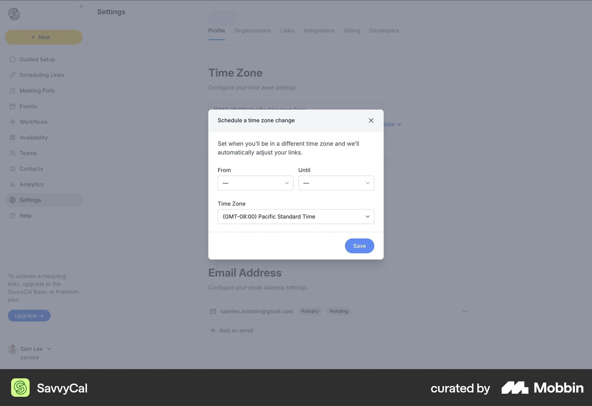
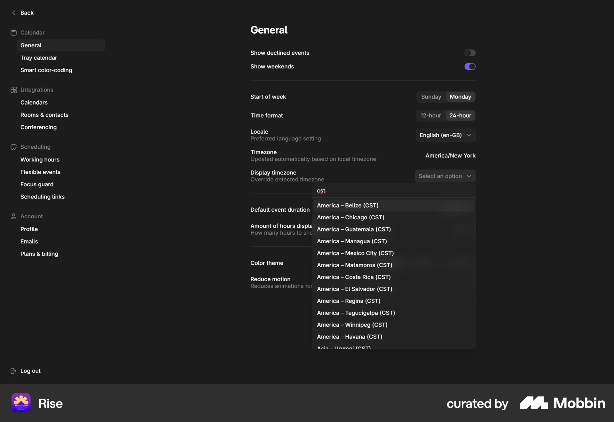
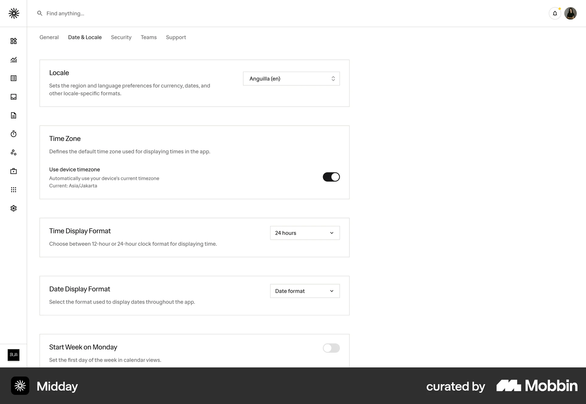

Milky Studio 지역·날씨 연동
기존 Climate 패널에 자동 적용의 출처, 위치 권한, 로딩·실패·재시도 상태를 표시합니다. 배경 그림, 로고, 글꼴은 유지합니다. 수동 설정 시 자동 변경을 멈춥니다.
첫 방문에는 브라우저 위치 권한이 필요합니다. 거부해도 기기의 현지 날짜와 시간은 반영합니다. 허용한 위치는 소수점 두 자리로 줄여 Open-Meteo에 전송하고, 저장하지 않습니다.
비교한 방향
채택: 기존 설정 패널 확장. 제외: 별도 날씨 대시보드와 항상 보이는 큰 날씨 카드.
Reusable switch entry delegates to FormExample and a library wrapper; importing its React dependencies is unnecessary for this plain TypeScript site.
studio source-read · 612eaa173f8467c842a6af38743d08b55741f00fe6b03cf897672d3836f5b0baA focused timezone dialog exposes dates and a timezone selector; avoid adding a separate scheduling dialog here.

mcp__mobbin__search_screens · 43fbca77-d9f6-49cd-b1c5-73f642f8195aAutomatic local timezone is shown separately from its display override; retain manual atmosphere settings alongside auto.

mcp__mobbin__search_screens · 33daecb9-3daa-4a9c-bdd0-dcaebc484cafDevice timezone switch is paired with the currently detected timezone; display actual source/status near Auto.

mcp__mobbin__search_screens · b4190675-4964-4434-8fad-591cf963607aInspected component and demo code: horizontal title/description/switch rows and separators. Adopt hierarchy using existing styles; do not copy React/Radix source. No standalone license field was returned.
mcp__21st__get_component · 26523Inspected component and demo code: state-dependent action label and aria-label. Adopt explicit loading/live/unavailable labels, reject icon-only toggles and extra React dependencies. License absent; no code copied.
mcp__21st__get_component · 24436검증 상태
Mobbin 실제 이미지 3개와 21st 컴포넌트·데모 소스 2개를 확인했습니다. Studio의 스위치 소스도 확인했습니다. 이 프로젝트는 Studio에 연결되어 있지 않아 원격 동기화는 대기 중입니다. 자동 테스트 150개, 빌드, DOM 설정 패널 동작 및 실제 Open-Meteo 응답을 확인했습니다. Chrome 연결 도구 오류로 실제 브라우저 화면·권한 흐름은 검증하지 못했습니다. Studio 원격 동기화는 “Connect the project before synchronizing research”로 대기 중입니다. 참고 이미지 두 개는 업로드했고, Rise 원본은 업로드 크기 제한으로 로컬에 보존했습니다.